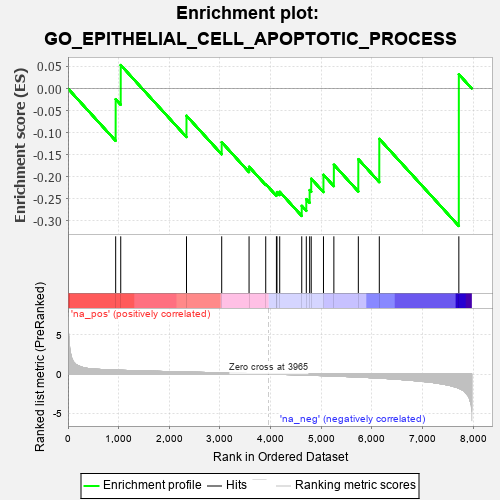
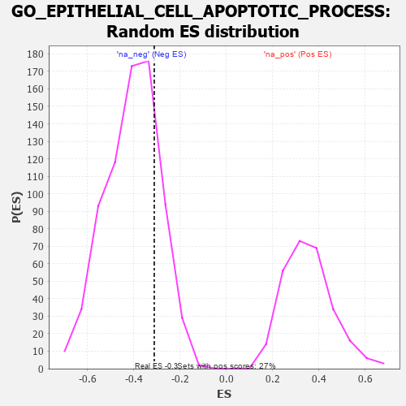

| | | Dataset | 7d |
| Phenotype | NoPhenotypeAvailable |
| Upregulated in class | na_neg |
| GeneSet | GO_EPITHELIAL_CELL_APOPTOTIC_PROCESS |
| Enrichment Score (ES) | -0.31128895 |
| Normalized Enrichment Score (NES) | -0.7665584 |
| Nominal p-value | 0.79286695 |
| FDR q-value | 0.9980481 |
| FWER p-Value | 1.0 |
Table: GSEA Results Summary

Fig 1: Enrichment plot: GO_EPITHELIAL_CELL_APOPTOTIC_PROCESS
Profile of the Running ES Score & Positions of GeneSet Members on the Rank Ordered List
| PROBE | GENE SYMBOL | GENE_TITLE | RANK IN GENE LIST | RANK METRIC SCORE | RUNNING ES | CORE ENRICHMENT | | 1 | PDCD4 | | | 941 | 0.497 | -0.0243 | No |
| 2 | YAP1 | | | 1041 | 0.475 | 0.0532 | No |
| 3 | ANO6 | | | 2339 | 0.255 | -0.0617 | No |
| 4 | PIAS4 | | | 3034 | 0.145 | -0.1216 | No |
| 5 | EXOC5 | | | 3574 | 0.064 | -0.1772 | No |
| 6 | JAG2 | | | 3903 | 0.010 | -0.2166 | No |
| 7 | MTOR | | | 4114 | -0.025 | -0.2383 | No |
| 8 | ABL1 | | | 4125 | -0.027 | -0.2346 | No |
| 9 | PDX1 | | | 4179 | -0.038 | -0.2340 | No |
| 10 | GATA3 | | | 4614 | -0.120 | -0.2658 | Yes |
| 11 | ARF6 | | | 4704 | -0.140 | -0.2506 | Yes |
| 12 | PLCG1 | | | 4770 | -0.151 | -0.2301 | Yes |
| 13 | TERT | | | 4801 | -0.157 | -0.2042 | Yes |
| 14 | PDPK1 | | | 5043 | -0.207 | -0.1954 | Yes |
| 15 | KRIT1 | | | 5248 | -0.257 | -0.1726 | Yes |
| 16 | TIA1 | | | 5731 | -0.386 | -0.1601 | Yes |
| 17 | STK4 | | | 6145 | -0.518 | -0.1140 | Yes |
| 18 | BOK | | | 7715 | -1.817 | 0.0322 | Yes |
Table: GSEA details [plain text format]

Fig 2: GO_EPITHELIAL_CELL_APOPTOTIC_PROCESS: Random ES distribution
Gene set null distribution of ES for GO_EPITHELIAL_CELL_APOPTOTIC_PROCESS